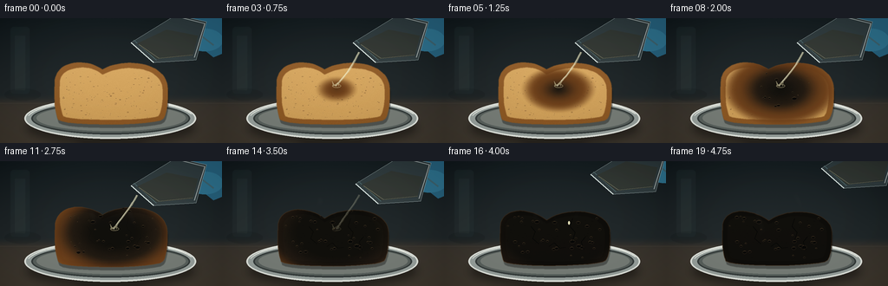
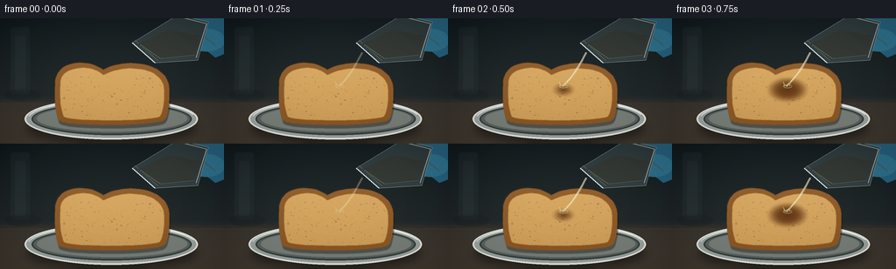

CODING AGENTS AS PIXEL WORLD MODELS
traex/GPT-5.6-Sol · phygen_151
点击播放 · 原生 RGB 像素
逐轮保存的候选
回放视频、检查图与代码变化。
每份候选均可单独播放。实际图片检查记录在下方工具轨迹中。
候选 01播放与检查图
点击播放 · 原生 RGB 像素


展开代码变化
--- 上一保存版本
+++ 本次保存版本
@@ -0,0 +1,304 @@
+from pathlib import Path
+import math
+import numpy as np
+from PIL import Image, ImageDraw, ImageFilter
+import artifact_io
+
+# Deterministic, hand-built timelapse rendering. It uses only Pillow/numpy geometry.
+W, H, N = 256, 144, 20
+S = 3
+w, h = W*S, H*S
+rng = np.random.default_rng(151)
+
+def sc(v):
+ return int(round(v*S))
+
+def pts_scaled(pts):
+ return [(sc(x), sc(y)) for x,y in pts]
+
+def smoothstep(a, b, x):
+ z = np.clip((x-a)/(b-a), 0, 1)
+ return z*z*(3-2*z)
+
+def cubic(p0,p1,p2,p3,n=12):
+ out=[]
+ for u in np.linspace(0,1,n,endpoint=False):
+ v=1-u
+ out.append((v**3*p0[0]+3*v*v*u*p1[0]+3*v*u*u*p2[0]+u**3*p3[0],
+ v**3*p0[1]+3*v*v*u*p1[1]+3*v*u*u*p2[1]+u**3*p3[1]))
+ return out
+
+def bread_outline(q):
+ # The loaf slowly contracts and its crown slumps as it chars.
+ shrinkx = 1-.035*q
+ shrinky = 1-.075*q
+ cx, cy = 128, 91
+ path=[]
+ path += cubic((63,77),(62,65),(69,55+2*q),(82,52+3*q))
+ path += cubic((82,52+3*q),(94,49+5*q),(108,52+7*q),(118,59+8*q))
+ path += cubic((118,59+8*q),(128,53+6*q),(143,50+5*q),(159,52+4*q))
+ path += cubic((159,52+4*q),(178,54+3*q),(191,64+2*q),(193,78))
+ path += cubic((193,78),(194,92),(193,109),(188,116))
+ path += cubic((188,116),(182,124),(75,125),(67,117))
+ path += cubic((67,117),(63,108),(62,91),(63,77))
+ return [(cx+(x-cx)*shrinkx, cy+(y-cy)*shrinky) for x,y in path]
+
+def inner_outline(q):
+ path=[]
+ path += cubic((69,77),(68,66),(75,60+2*q),(85,58+3*q))
+ path += cubic((85,58+3*q),(97,55+4*q),(108,57+6*q),(118,65+6*q))
+ path += cubic((118,65+6*q),(130,59+5*q),(143,56+4*q),(157,58+3*q))
+ path += cubic((157,58+3*q),(174,59+3*q),(186,68+2*q),(187,80))
+ path += cubic((187,80),(188,92),(187,107),(182,113))
+ path += cubic((182,113),(174,118),(81,119),(73,113))
+ path += cubic((73,113),(69,105),(68,89),(69,77))
+ cx,cy=128,91
+ return [(cx+(x-cx)*(1-.035*q),cy+(y-cy)*(1-.075*q)) for x,y in path]
+
+# Static photographic grain and low-frequency chemical front distortion.
+noise = rng.normal(0, 1, (h,w))
+noise_img = Image.fromarray(np.uint8(np.clip(128+noise*25,0,255))).filter(ImageFilter.GaussianBlur(sc(.35)))
+gr = (np.asarray(noise_img).astype(np.float32)-128)/128
+low = rng.normal(0,1,(h,w))
+lowim = Image.fromarray(np.uint8(np.clip(128+low*30,0,255))).filter(ImageFilter.GaussianBlur(sc(5)))
+lowfield=(np.asarray(lowim).astype(np.float32)-128)/128
+Y,X=np.mgrid[0:h,0:w]
+xf=X/S; yf=Y/S
+
+# Fixed pore population and reaction bubbles for temporal coherence.
+pores=[]
+for _ in range(145):
+ x=float(rng.uniform(73,185)); y=float(rng.uniform(61,116))
+ rx=float(rng.uniform(.35,1.55)); ry=float(rng.uniform(.28,1.0))
+ pores.append((x,y,rx,ry,float(rng.uniform(.35,.9))))
+bubbles=[]
+for _ in range(42):
+ ang=float(rng.uniform(0,2*math.pi)); rad=float(math.sqrt(rng.random()))
+ x=130+rad*61*math.cos(ang); y=84+rad*34*math.sin(ang)
+ activate=float(np.clip(.20+rad*.42+rng.uniform(-.09,.09),.15,.78))
+ size=float(rng.uniform(1.0,3.5)*(1-.25*rad))
+ bubbles.append((x,y,activate,size,float(rng.random()*6.28)))
+
+# Background rendered once.
+def make_background():
+ arr=np.zeros((h,w,3),np.float32)
+ yy=yf/H
+ # deep, neutral laboratory backdrop with warm benchtop
+ arr[:,:,0]=26+18*yy
+ arr[:,:,1]=34+16*yy
+ arr[:,:,2]=37+14*yy
+ bench=smoothstep(87,102,yf)
+ arr[:,:,0]=arr[:,:,0]*(1-bench)+(62+10*(yf-100)/44)*bench
+ arr[:,:,1]=arr[:,:,1]*(1-bench)+(57+8*(yf-100)/44)*bench
+ arr[:,:,2]=arr[:,:,2]*(1-bench)+(50+5*(yf-100)/44)*bench
+ # vignette and fine sensor grain
+ vign=np.clip(((xf-128)/180)**2+((yf-72)/115)**2,0,1)
+ arr-=vign[:,:,None]*13
+ arr += gr[:,:,None]*1.7
+ im=Image.fromarray(np.uint8(np.clip(arr,0,255)),'RGB')
+ d=ImageDraw.Draw(im,'RGBA')
+ # blurry vertical lab forms in the distance
+ d.rounded_rectangle((sc(12),sc(10),sc(34),sc(87)),radius=sc(4),fill=(54,72,74,38))
+ d.rectangle((sc(17),sc(20),sc(29),sc(83)),fill=(96,116,112,20))
+ d.ellipse((sc(5),sc(81),sc(47),sc(95)),fill=(15,20,21,45))
+ # bench seam and pool of light
+ d.line((0,sc(98),w,sc(98)),fill=(118,104,86,32),width=sc(1))
+ return im.filter(ImageFilter.GaussianBlur(sc(.22)))
+
+BACKGROUND=make_background()
+
+def mask_from_poly(points, blur=0):
+ m=Image.new('L',(w,h),0)
+ ImageDraw.Draw(m).polygon(pts_scaled(points),fill=255)
+ if blur: m=m.filter(ImageFilter.GaussianBlur(sc(blur)))
+ return m
+
+def texture_layer(mask, base, variation=8, vertical=0):
+ ma=np.asarray(mask).astype(np.float32)/255
+ a=np.zeros((h,w,4),np.uint8)
+ for c,val in enumerate(base):
+ tex=val+variation*gr+vertical*(yf-85)/45
+ a[:,:,c]=np.uint8(np.clip(tex,0,255))
+ a[:,:,3]=np.uint8(ma*255)
+ return Image.fromarray(a,'RGBA')
+
+def draw_tray(im):
+ # shadow under dish
+ sh=Image.new('RGBA',(w,h),(0,0,0,0)); sd=ImageDraw.Draw(sh,'RGBA')
+ sd.ellipse((sc(30),sc(107),sc(225),sc(145)),fill=(0,0,0,105))
+ sh=sh.filter(ImageFilter.GaussianBlur(sc(5))); im.alpha_composite(sh)
+ d=ImageDraw.Draw(im,'RGBA')
+ d.ellipse((sc(28),sc(92),sc(226),sc(139)),fill=(153,162,158,245),outline=(225,229,222,210),width=sc(2))
+ d.ellipse((sc(36),sc(97),sc(219),sc(134)),fill=(89,97,93,255),outline=(54,61,60,220),width=sc(2))
+ d.ellipse((sc(42),sc(100),sc(214),sc(130)),fill=(119,125,119,255))
+ d.arc((sc(31),sc(94),sc(224),sc(138)),190,345,fill=(245,247,238,150),width=sc(1))
+
+def bread_masks(q):
+ return mask_from_poly(bread_outline(q),.25), mask_from_poly(inner_outline(q),.22)
+
+def draw_bread(im, frame, react):
+ q=smoothstep(.48,1,react)
+ outer,inner=bread_masks(float(q))
+ # elevated soft shadow
+ shadow=Image.new('RGBA',(w,h),(0,0,0,0))
+ shifted=Image.new('L',(w,h),0); shifted.paste(outer,(sc(1),sc(4)))
+ shadow.putalpha(shifted.filter(ImageFilter.GaussianBlur(sc(3))))
+ black=Image.new('RGBA',(w,h),(0,0,0,100)); black.putalpha(shifted.point(lambda z:z*85//255))
+ im.alpha_composite(black)
+ # crust and crumb
+ crust_col=(116-20*q,70-20*q,31-12*q)
+ im.alpha_composite(texture_layer(outer,crust_col,13,-8))
+ im.alpha_composite(texture_layer(inner,(211-26*q,164-27*q,94-17*q),11,-9))
+ # subtle toasted edge glow
+ edge=np.asarray(outer,dtype=np.int16)-np.asarray(inner,dtype=np.int16)
+ edgeim=Image.fromarray(np.uint8(np.clip(edge,0,255)),'L')
+ hi=Image.new('RGBA',(w,h),(240,168,73,0)); hi.putalpha(edgeim.point(lambda z:int(z*.22)))
+ im.alpha_composite(hi)
+
+ # crumb pores on their own clipped layer
+ pl=Image.new('RGBA',(w,h),(0,0,0,0)); pd=ImageDraw.Draw(pl,'RGBA')
+ for x,y,rx,ry,a in pores:
+ # fewer visible pores as wet black carbon overtakes them
+ pd.ellipse((sc(x-rx),sc(y-ry),sc(x+rx),sc(y+ry)),fill=(79,48,22,int(105*a)),
+ outline=(247,211,145,int(55*a)),width=max(1,sc(.25)))
+ pl.putalpha(Image.fromarray(np.minimum(np.asarray(pl.getchannel('A')),np.asarray(inner)).astype(np.uint8)))
+ im.alpha_composite(pl)
+
+ # Chemical front: brown wet halo around a deeply carbonized center.
+ dx=(xf-132)/76; dy=(yf-82)/48
+ dist=np.sqrt(dx*dx+dy*dy)
+ local=react*1.62-dist*.88+lowfield*.19
+ wet=smoothstep(.00,.23,local)
+ brown=smoothstep(.16,.53,local)
+ char=smoothstep(.39,.84,local)
+ inside=np.asarray(outer).astype(np.float32)/255
+ # Keep the very first acid contact a small transparent wet stain.
+ alpha=inside*wet
+ rgba=np.zeros((h,w,4),np.uint8)
+ dry=np.stack([np.full((h,w),104),np.full((h,w),58),np.full((h,w),22)],axis=2)
+ dark=np.stack([30+8*gr,23+5*gr,17+3*gr],axis=2)
+ coal=np.stack([9+8*np.maximum(gr,0),10+6*np.maximum(gr,0),9+4*np.maximum(gr,0)],axis=2)
+ col=dry*(1-brown[:,:,None])+dark*brown[:,:,None]
+ col=col*(1-char[:,:,None])+coal*char[:,:,None]
+ rgba[:,:,:3]=np.uint8(np.clip(col,0,255)); rgba[:,:,3]=np.uint8(alpha*244)
+ im.alpha_composite(Image.fromarray(rgba,'RGBA'))
+
+ # Amber glossy wet boundary catches the overhead light.
+ ring=np.clip(wet-brown,0,1)*inside
+ ring_rgba=np.zeros((h,w,4),np.uint8); ring_rgba[:,:,:3]=(111,67,30); ring_rgba[:,:,3]=np.uint8(ring*125)
+ im.alpha_composite(Image.fromarray(ring_rgba,'RGBA'))
+
+ # Raised blisters, pits, and oily highlights emerge on carbonized bread.
+ bl=Image.new('RGBA',(w,h),(0,0,0,0)); bd=ImageDraw.Draw(bl,'RGBA')
+ for x,y,act,size,phase in bubbles:
+ life=float(smoothstep(act,act+.16,react))
+ if life<=0: continue
+ pulse=.86+.16*math.sin(frame*.82+phase)
+ rr=size*life*pulse*(1+.16*q)
+ # ensure the bubble is approximately inside the reaction region
+ dd=math.sqrt(((x-132)/76)**2+((y-82)/48)**2)
+ if react*1.6-dd*.88 < .38: continue
+ bd.ellipse((sc(x-rr),sc(y-rr*.68),sc(x+rr),sc(y+rr*.68)),fill=(8,8,7,220),outline=(64,49,33,190),width=sc(.45))
+ bd.arc((sc(x-rr*.72),sc(y-rr*.5),sc(x+rr*.72),sc(y+rr*.5)),195,320,fill=(138,111,70,125),width=max(1,sc(.35)))
+ if rr>1.7:
+ bd.ellipse((sc(x-rr*.25),sc(y-rr*.15),sc(x+rr*.18),sc(y+rr*.18)),fill=(2,3,3,185))
+ bl.putalpha(Image.fromarray(np.minimum(np.asarray(bl.getchannel('A')),np.asarray(outer)).astype(np.uint8)))
+ im.alpha_composite(bl)
+
+ # A few contraction cracks at late stages.
+ if react>.55:
+ crack=Image.new('RGBA',(w,h),(0,0,0,0)); cd=ImageDraw.Draw(crack,'RGBA')
+ strength=int(180*smoothstep(.55,.92,react))
+ paths=[[(100,75),(105,81),(102,89),(109,95)],[(148,66),(145,75),(151,82),(148,91)],[(121,98),(127,94),(133,100),(140,99)],[(163,87),(158,93),(161,102)]]
+ for p in paths: cd.line(pts_scaled(p),fill=(2,3,3,strength),width=max(1,sc(.55)),joint='curve')
+ crack.putalpha(Image.fromarray(np.minimum(np.asarray(crack.getchannel('A')),np.asarray(outer)).astype(np.uint8)))
+ im.alpha_composite(crack)
+
+
+def draw_smoke(im, frame, react):
+ amount=float(smoothstep(.34,.74,react))
+ if amount<=0:return
+ smoke=Image.new('RGBA',(w,h),(0,0,0,0)); d=ImageDraw.Draw(smoke,'RGBA')
+ for j in range(7):
+ x0=88+j*14+5*math.sin(j*2.1)
+ phase=frame*.58+j*1.7
+ rise=(frame*2.0+j*5)%39
+ y0=83+7*math.sin(j)-rise*.55
+ points=[]
+ for k in range(7):
+ yy=y0-k*5.3
+ xx=x0+math.sin(phase+k*.8)*(2.5+k*.65)+(k*k*.11 if j%2 else -k*k*.08)
+ points.append((sc(xx),sc(yy)))
+ d.line(points,fill=(205,211,207,int((24+9*(j%3))*amount)),width=sc(1.0+0.25*(j%2)),joint='curve')
+ smoke=smoke.filter(ImageFilter.GaussianBlur(sc(2.2)))
+ im.alpha_composite(smoke)
+
+
+def draw_beaker_and_pour(im, frame, react):
+ # Beaker recedes after pouring. Coordinates are a convincing oblique side view.
+ retreat=smoothstep(13,18,frame)
+ ox=retreat*28; oy=-retreat*20
+ layer=Image.new('RGBA',(w,h),(0,0,0,0)); d=ImageDraw.Draw(layer,'RGBA')
+ # Nitrile-gloved fingers behind glass, mostly cropped at upper-right.
+ hand=[(211+ox,-5+oy),(256+ox,-4+oy),(258+ox,40+oy),(246+ox,45+oy),(231+ox,33+oy),(210+ox,25+oy)]
+ d.polygon(pts_scaled(hand),fill=(38,100,129,235))
+ d.ellipse((sc(215+ox),sc(12+oy),sc(257+ox),sc(38+oy)),fill=(47,119,149,230))
+ d.line(pts_scaled([(225+ox,15+oy),(246+ox,31+oy)]),fill=(93,159,180,130),width=sc(2))
+ # tipped glass beaker: mouth is the diagonal at left, body extends up-right
+ body=[(151+ox,28+oy),(203+ox,-4+oy),(238+ox,4+oy),(226+ox,48+oy),(177+ox,51+oy)]
+ d.polygon(pts_scaled(body),fill=(169,200,202,43),outline=(219,238,237,190))
+ d.line(pts_scaled([(151+ox,28+oy),(177+ox,51+oy)]),fill=(235,247,242,235),width=sc(1.5))
+ d.line(pts_scaled([(154+ox,25+oy),(180+ox,48+oy)]),fill=(104,142,144,180),width=sc(.7))
+ d.line(pts_scaled([(204+ox,-2+oy),(236+ox,6+oy),(224+ox,45+oy)]),fill=(241,250,246,160),width=sc(1))
+ # clear viscous acid inside: only faint warm refraction, never bright blue.
+ acid=[(158+ox,29+oy),(180+ox,47+oy),(222+ox,43+oy),(228+ox,20+oy),(192+ox,13+oy)]
+ d.polygon(pts_scaled(acid),fill=(214,205,157,35))
+ d.line(pts_scaled([(160+ox,30+oy),(183+ox,46+oy),(222+ox,42+oy)]),fill=(241,231,176,100),width=sc(.7))
+ im.alpha_composite(layer)
+
+ # Pouring lasts through the early/middle timelapse, then breaks into drops.
+ pour_in=float(smoothstep(0,2,frame)); pour_out=1-float(smoothstep(12.5,15,frame))
+ strength=pour_in*pour_out
+ if strength>0.02:
+ stream=Image.new('RGBA',(w,h),(0,0,0,0)); sd=ImageDraw.Draw(stream,'RGBA')
+ start=(158+ox*.15,39+oy*.12)
+ path=[]
+ for k in range(16):
+ u=k/15
+ x=start[0]*(1-u)+132*u+2.1*math.sin(u*math.pi+frame*.23)*u
+ y=start[1]*(1-u)+78*u+7*u*(1-u)
+ path.append((sc(x),sc(y)))
+ sd.line(path,fill=(223,219,175,int(135*strength)),width=sc(2.2),joint='curve')
+ sd.line([(x-sc(.45),y) for x,y in path],fill=(255,253,222,int(190*strength)),width=max(1,sc(.55)),joint='curve')
+ # tiny splash crown at impact
+ a=int(140*strength)
+ sd.ellipse((sc(127),sc(76),sc(137),sc(80)),outline=(231,220,168,a),width=sc(.7))
+ sd.line(pts_scaled([(130,78),(127,73),(128,78),(135,73),(134,78)]),fill=(230,221,175,a),width=max(1,sc(.5)))
+ im.alpha_composite(stream)
+ elif frame in (15,16):
+ d=ImageDraw.Draw(im,'RGBA'); yy=58+(frame-15)*11
+ d.ellipse((sc(143),sc(yy),sc(145),sc(yy+4)),fill=(233,228,188,155))
+
+
+def render(frame):
+ t=frame/(N-1)
+ # Reaction lags the pour, then accelerates in the timelapse.
+ react=float(np.clip((frame-1)/17,0,1))
+ react=float(react**.78)
+ im=BACKGROUND.convert('RGBA')
+ draw_tray(im)
+ draw_bread(im,frame,react)
+ draw_smoke(im,frame,react)
+ draw_beaker_and_pour(im,frame,react)
+ # subtle optics and vignette, with fixed exposure (no artificial fades)
+ arr=np.asarray(im.convert('RGB')).astype(np.float32)
+ vign=np.clip(((xf-128)/172)**2+((yf-72)/104)**2,0,1)
+ arr*= (1-.12*vign[:,:,None])
+ arr=np.clip(arr,0,255).astype(np.uint8)
+ out=Image.fromarray(arr,'RGB').resize((W,H),Image.Resampling.LANCZOS)
+ return np.asarray(out,dtype=np.uint8)
+
+frames=np.stack([render(i) for i in range(N)],axis=0)
+case_dir=Path(__file__).resolve().parent
+artifact_io.save(frames,case_dir)
+print(f"saved {frames.shape} RGB frames to {case_dir}")
可观测工具轨迹
实际执行的命令与返回图片。
命令 1exit 0
/bin/bash -lc "cat prompt.txt && printf '\\n---RULES---\\n' && cat GENERATION_RULES.md && printf '\\n---SPEC---\\n' && cat task_spec.json"
命令 2exit 0
/bin/bash -lc "find . -maxdepth 2 -type f -printf '%p\\n' | sort"
命令 3exit 0
/bin/bash -lc 'cat artifact_io.py'
命令 4exit 0
/bin/bash -lc "cat > generate.py <<'PY'
from pathlib import Path
import math
import numpy as np
from PIL import Image, ImageDraw, ImageFilter
import artifact_io
# Deterministic, hand-built timelapse rendering. It uses only Pillow/numpy geometry.
W, H, N = 256, 144, 20
S = 3
w, h = W*S, H*S
rng = np.random.default_rng(151)
def sc(v):
return int(round(v*S))
def pts_scaled(pts):
return [(sc(x), sc(y)) for x,y in pts]
def smoothstep(a, b, x):
z = np.clip((x-a)/(b-a), 0, 1)
return z*z*(3-2*z)
def cubic(p0,p1,p2,p3,n=12):
out=[]
for u in np.linspace(0,1,n,endpoint=False):
v=1-u
out.append((v**3*p0[0]+3*v*v*u*p1[0]+3*v*u*u*p2[0]+u**3*p3[0],
v**3*p0[1]+3*v*v*u*p1[1]+3*v*u*u*p2[1]+u**3*p3[1]))
return out
def bread_outline(q):
# The loaf slowly contracts and its crown slumps as it chars.
shrinkx = 1-.035*q
shrinky = 1-.075*q
cx, cy = 128, 91
path=[]
path += cubic((63,77),(62,65),(69,55+2*q),(82,52+3*q))
path += cubic((82,52+3*q),(94,49+5*q),(108,52+7*q),(118,59+8*q))
path += cubic((118,59+8*q),(128,53+6*q),(143,50+5*q),(159,52+4*q))
path += cubic((159,52+4*q),(178,54+3*q),(191,64+2*q),(193,78))
path += cubic((193,78),(194,92),(193,109),(188,116))
path += cubic((188,116),(182,124),(75,125),(67,117))
path += cubic((67,117),(63,108),(62,91),(63,77))
return [(cx+(x-cx)*shrinkx, cy+(y-cy)*shrinky) for x,y in path]
def inner_outline(q):
path=[]
path += cubic((69,77),(68,66),(75,60+2*q),(85,58+3*q))
path += cubic((85,58+3*q),(97,55+4*q),(108,57+6*q),(118,65+6*q))
path += cubic((118,65+6*q),(130,59+5*q),(143,56+4*q),(157,58+3*q))
path += cubic((157,58+3*q),(174,59+3*q),(186,68+2*q),(187,80))
path += cubic((187,80),(188,92),(187,107),(182,113))
path += cubic((182,113),(174,118),(81,119),(73,113))
path += cubic((73,113),(69,105),(68,89),(69,77))
cx,cy=128,91
return [(cx+(x-cx)*(1-.035*q),cy+(y-cy)*(1-.075*q)) for x,y in path]
# Static photographic grain and low-frequency chemical front distortion.
noise = rng.normal(0, 1, (h,w))
noise_img = Image.fromarray(np.uint8(np.clip(128+noise*25,0,255))).filter(ImageFilter.GaussianBlur(sc(.35)))
gr = (np.asarray(noise_img).astype(np.float32)-128)/128
low = rng.normal(0,1,(h,w))
lowim = Image.fromarray(np.uint8(np.clip(128+low*30,0,255))).filter(ImageFilter.GaussianBlur(sc(5)))
lowfield=(np.asarray(lowim).astype(np.float32)-128)/128
Y,X=np.mgrid[0:h,0:w]
xf=X/S; yf=Y/S
# Fixed pore population and reaction bubbles for temporal coherence.
pores=[]
for _ in range(145):
x=float(rng.uniform(73,185)); y=float(rng.uniform(61,116))
rx=float(rng.uniform(.35,1.55)); ry=float(rng.uniform(.28,1.0))
pores.append((x,y,rx,ry,float(rng.uniform(.35,.9))))
bubbles=[]
for _ in range(42):
ang=float(rng.uniform(0,2*math.pi)); rad=float(math.sqrt(rng.random()))
x=130+rad*61*math.cos(ang); y=84+rad*34*math.sin(ang)
activate=float(np.clip(.20+rad*.42+rng.uniform(-.09,.09),.15,.78))
size=float(rng.uniform(1.0,3.5)*(1-.25*rad))
bubbles.append((x,y,activate,size,float(rng.random()*6.28)))
# Background rendered once.
def make_background():
arr=np.zeros((h,w,3),np.float32)
yy=yf/H
# deep, neutral laboratory backdrop with warm benchtop
arr[:,:,0]=26+18*yy
arr[:,:,1]=34+16*yy
arr[:,:,2]=37+14*yy
bench=smoothstep(87,102,yf)
arr[:,:,0]=arr[:,:,0]*(1-bench)+(62+10*(yf-100)/44)*bench
arr[:,:,1]=arr[:,:,1]*(1-bench)+(57+8*(yf-100)/44)*bench
arr[:,:,2]=arr[:,:,2]*(1-bench)+(50+5*(yf-100)/44)*bench
# vignette and fine sensor grain
vign=np.clip(((xf-128)/180)**2+((yf-72)/115)**2,0,1)
arr-=vign[:,:,None]*13
arr += gr[:,:,None]*1.7
im=Image.fromarray(np.uint8(np.clip(arr,0,255)),'RGB')
d=ImageDraw.Draw(im,'RGBA')
# blurry vertical lab forms in the distance
d.rounded_rectangle((sc(12),sc(10),sc(34),sc(87)),radius=sc(4),fill=(54,72,74,38))
d.rectangle((sc(17),sc(20),sc(29),sc(83)),fill=(96,116,112,20))
d.ellipse((sc(5),sc(81),sc(47),sc(95)),fill=(15,20,21,45))
# bench seam and pool of light
d.line((0,sc(98),w,sc(98)),fill=(118,104,86,32),width=sc(1))
return im.filter(ImageFilter.GaussianBlur(sc(.22)))
BACKGROUND=make_background()
def mask_from_poly(points, blur=0):
m=Image.new('L',(w,h),0)
ImageDraw.Draw(m).polygon(pts_scaled(points),fill=255)
if blur: m=m.filter(ImageFilter.GaussianBlur(sc(blur)))
return m
def texture_layer(mask, base, variation=8, vertical=0):
ma=np.asarray(mask).astype(np.float32)/255
a=np.zeros((h,w,4),np.uint8)
for c,val in enumerate(base):
tex=val+variation*gr+vertical*(yf-85)/45
a[:,:,c]=np.uint8(np.clip(tex,0,255))
a[:,:,3]=np.uint8(ma*255)
return Image.fromarray(a,'RGBA')
def draw_tray(im):
# shadow under dish
sh=Image.new('RGBA',(w,h),(0,0,0,0)); sd=ImageDraw.Draw(sh,'RGBA')
sd.ellipse((sc(30),sc(107),sc(225),sc(145)),fill=(0,0,0,105))
sh=sh.filter(ImageFilter.GaussianBlur(sc(5))); im.alpha_composite(sh)
d=ImageDraw.Draw(im,'RGBA')
d.ellipse((sc(28),sc(92),sc(226),sc(139)),fill=(153,162,158,245),outline=(225,229,222,210),width=sc(2))
d.ellipse((sc(36),sc(97),sc(219),sc(134)),fill=(89,97,93,255),outline=(54,61,60,220),width=sc(2))
d.ellipse((sc(42),sc(100),sc(214),sc(130)),fill=(119,125,119,255))
d.arc((sc(31),sc(94),sc(224),sc(138)),190,345,fill=(245,247,238,150),width=sc(1))
def bread_masks(q):
return mask_from_poly(bread_outline(q),.25), mask_from_poly(inner_outline(q),.22)
def draw_bread(im, frame, react):
q=smoothstep(.48,1,react)
outer,inner=bread_masks(float(q))
# elevated soft shadow
shadow=Image.new('RGBA',(w,h),(0,0,0,0))
shifted=Image.new('L',(w,h),0); shifted.paste(outer,(sc(1),sc(4)))
shadow.putalpha(shifted.filter(ImageFilter.GaussianBlur(sc(3))))
black=Image.new('RGBA',(w,h),(0,0,0,100)); black.putalpha(shifted.point(lambda z:z*85//255))
im.alpha_composite(black)
# crust and crumb
crust_col=(116-20*q,70-20*q,31-12*q)
im.alpha_composite(texture_layer(outer,crust_col,13,-8))
im.alpha_composite(texture_layer(inner,(211-26*q,164-27*q,94-17*q),11,-9))
# subtle toasted edge glow
edge=np.asarray(outer,dtype=np.int16)-np.asarray(inner,dtype=np.int16)
edgeim=Image.fromarray(np.uint8(np.clip(edge,0,255)),'L')
hi=Image.new('RGBA',(w,h),(240,168,73,0)); hi.putalpha(edgeim.point(lambda z:int(z*.22)))
im.alpha_composite(hi)
# crumb pores on their own clipped layer
pl=Image.new('RGBA',(w,h),(0,0,0,0)); pd=ImageDraw.Draw(pl,'RGBA')
for x,y,rx,ry,a in pores:
# fewer visible pores as wet black carbon overtakes them
pd.ellipse((sc(x-rx),sc(y-ry),sc(x+rx),sc(y+ry)),fill=(79,48,22,int(105*a)),
outline=(247,211,145,int(55*a)),width=max(1,sc(.25)))
pl.putalpha(Image.fromarray(np.minimum(np.asarray(pl.getchannel('A')),np.asarray(inner)).astype(np.uint8)))
im.alpha_composite(pl)
# Chemical front: brown wet halo around a deeply carbonized center.
dx=(xf-132)/76; dy=(yf-82)/48
dist=np.sqrt(dx*dx+dy*dy)
local=react*1.62-dist*.88+lowfield*.19
wet=smoothstep(.00,.23,local)
brown=smoothstep(.16,.53,local)
char=smoothstep(.39,.84,local)
inside=np.asarray(outer).astype(np.float32)/255
# Keep the very first acid contact a small transparent wet stain.
alpha=inside*wet
rgba=np.zeros((h,w,4),np.uint8)
dry=np.stack([np.full((h,w),104),np.full((h,w),58),np.full((h,w),22)],axis=2)
dark=np.stack([30+8*gr,23+5*gr,17+3*gr],axis=2)
coal=np.stack([9+8*np.maximum(gr,0),10+6*np.maximum(gr,0),9+4*np.maximum(gr,0)],axis=2)
col=dry*(1-brown[:,:,None])+dark*brown[:,:,None]
col=col*(1-char[:,:,None])+coal*char[:,:,None]
rgba[:,:,:3]=np.uint8(np.clip(col,0,255)); rgba[:,:,3]=np.uint8(alpha*244)
im.alpha_composite(Image.fromarray(rgba,'RGBA'))
# Amber glossy wet boundary catches the overhead light.
ring=np.clip(wet-brown,0,1)*inside
ring_rgba=np.zeros((h,w,4),np.uint8); ring_rgba[:,:,:3]=(111,67,30); ring_rgba[:,:,3]=np.uint8(ring*125)
im.alpha_composite(Image.fromarray(ring_rgba,'RGBA'))
# Raised blisters, pits, and oily highlights emerge on carbonized bread.
bl=Image.new('RGBA',(w,h),(0,0,0,0)); bd=ImageDraw.Draw(bl,'RGBA')
for x,y,act,size,phase in bubbles:
life=float(smoothstep(act,act+.16,react))
if life<=0: continue
pulse=.86+.16*math.sin(frame*.82+phase)
rr=size*life*pulse*(1+.16*q)
# ensure the bubble is approximately inside the reaction region
dd=math.sqrt(((x-132)/76)**2+((y-82)/48)**2)
if react*1.6-dd*.88 < .38: continue
bd.ellipse((sc(x-rr),sc(y-rr*.68),sc(x+rr),sc(y+rr*.68)),fill=(8,8,7,220),outline=(64,49,33,190),width=sc(.45))
bd.arc((sc(x-rr*.72),sc(y-rr*.5),sc(x+rr*.72),sc(y+rr*.5)),195,320,fill=(138,111,70,125),width=max(1,sc(.35)))
if rr>1.7:
bd.ellipse((sc(x-rr*.25),sc(y-rr*.15),sc(x+rr*.18),sc(y+rr*.18)),fill=(2,3,3,185))
bl.putalpha(Image.fromarray(np.minimum(np.asarray(bl.getchannel('A')),np.asarray(outer)).astype(np.uint8)))
im.alpha_composite(bl)
# A few contraction cracks at late stages.
if react>.55:
crack=Image.new('RGBA',(w,h),(0,0,0,0)); cd=ImageDraw.Draw(crack,'RGBA')
strength=int(180*smoothstep(.55,.92,react))
paths=[[(100,75),(105,81),(102,89),(109,95)],[(148,66),(145,75),(151,82),(148,91)],[(121,98),(127,94),(133,100),(140,99)],[(163,87),(158,93),(161,102)]]
for p in paths: cd.line(pts_scaled(p),fill=(2,3,3,strength),width=max(1,sc(.55)),joint='curve')
crack.putalpha(Image.fromarray(np.minimum(np.asarray(crack.getchannel('A')),np.asarray(outer)).astype(np.uint8)))
im.alpha_composite(crack)
def draw_smoke(im, frame, react):
amount=float(smoothstep(.34,.74,react))
if amount<=0:return
smoke=Image.new('RGBA',(w,h),(0,0,0,0)); d=ImageDraw.Draw(smoke,'RGBA')
for j in range(7):
x0=88+j*14+5*math.sin(j*2.1)
phase=frame*.58+j*1.7
rise=(frame*2.0+j*5)%39
y0=83+7*math.sin(j)-rise*.55
points=[]
for k in range(7):
yy=y0-k*5.3
xx=x0+math.sin(phase+k*.8)*(2.5+k*.65)+(k*k*.11 if j%2 else -k*k*.08)
points.append((sc(xx),sc(yy)))
d.line(points,fill=(205,211,207,int((24+9*(j%3))*amount)),width=sc(1.0+0.25*(j%2)),joint='curve')
smoke=smoke.filter(ImageFilter.GaussianBlur(sc(2.2)))
im.alpha_composite(smoke)
def draw_beaker_and_pour(im, frame, react):
# Beaker recedes after pouring. Coordinates are a convincing oblique side view.
retreat=smoothstep(13,18,frame)
ox=retreat*28; oy=-retreat*20
layer=Image.new('RGBA',(w,h),(0,0,0,0)); d=ImageDraw.Draw(layer,'RGBA')
# Nitrile-gloved fingers behind glass, mostly cropped at upper-right.
hand=[(211+ox,-5+oy),(256+ox,-4+oy),(258+ox,40+oy),(246+ox,45+oy),(231+ox,33+oy),(210+ox,25+oy)]
d.polygon(pts_scaled(hand),fill=(38,100,129,235))
d.ellipse((sc(215+ox),sc(12+oy),sc(257+ox),sc(38+oy)),fill=(47,119,149,230))
d.line(pts_scaled([(225+ox,15+oy),(246+ox,31+oy)]),fill=(93,159,180,130),width=sc(2))
# tipped glass beaker: mouth is the diagonal at left, body extends up-right
body=[(151+ox,28+oy),(203+ox,-4+oy),(238+ox,4+oy),(226+ox,48+oy),(177+ox,51+oy)]
d.polygon(pts_scaled(body),fill=(169,200,202,43),outline=(219,238,237,190))
d.line(pts_scaled([(151+ox,28+oy),(177+ox,51+oy)]),fill=(235,247,242,235),width=sc(1.5))
d.line(pts_scaled([(154+ox,25+oy),(180+ox,48+oy)]),fill=(104,142,144,180),width=sc(.7))
d.line(pts_scaled([(204+ox,-2+oy),(236+ox,6+oy),(224+ox,45+oy)]),fill=(241,250,246,160),width=sc(1))
# clear viscous acid inside: only faint warm refraction, never bright blue.
acid=[(158+ox,29+oy),(180+ox,47+oy),(222+ox,43+oy),(228+ox,20+oy),(192+ox,13+oy)]
d.polygon(pts_scaled(acid),fill=(214,205,157,35))
d.line(pts_scaled([(160+ox,30+oy),(183+ox,46+oy),(222+ox,42+oy)]),fill=(241,231,176,100),width=sc(.7))
im.alpha_composite(layer)
# Pouring lasts through the early/middle timelapse, then breaks into drops.
pour_in=float(smoothstep(0,2,frame)); pour_out=1-float(smoothstep(12.5,15,frame))
strength=pour_in*pour_out
if strength>0.02:
stream=Image.new('RGBA',(w,h),(0,0,0,0)); sd=ImageDraw.Draw(stream,'RGBA')
start=(158+ox*.15,39+oy*.12)
path=[]
for k in range(16):
u=k/15
x=start[0]*(1-u)+132*u+2.1*math.sin(u*math.pi+frame*.23)*u
y=start[1]*(1-u)+78*u+7*u*(1-u)
path.append((sc(x),sc(y)))
sd.line(path,fill=(223,219,175,int(135*strength)),width=sc(2.2),joint='curve')
sd.line([(x-sc(.45),y) for x,y in path],fill=(255,253,222,int(190*strength)),width=max(1,sc(.55)),joint='curve')
# tiny splash crown at impact
a=int(140*strength)
sd.ellipse((sc(127),sc(76),sc(137),sc(80)),outline=(231,220,168,a),width=sc(.7))
sd.line(pts_scaled([(130,78),(127,73),(128,78),(135,73),(134,78)]),fill=(230,221,175,a),width=max(1,sc(.5)))
im.alpha_composite(stream)
elif frame in (15,16):
d=ImageDraw.Draw(im,'RGBA'); yy=58+(frame-15)*11
d.ellipse((sc(143),sc(yy),sc(145),sc(yy+4)),fill=(233,228,188,155))
def render(frame):
t=frame/(N-1)
# Reaction lags the pour, then accelerates in the timelapse.
react=float(np.clip((frame-1)/17,0,1))
react=float(react**.78)
im=BACKGROUND.convert('RGBA')
draw_tray(im)
draw_bread(im,frame,react)
draw_smoke(im,frame,react)
draw_beaker_and_pour(im,frame,react)
# subtle optics and vignette, with fixed exposure (no artificial fades)
arr=np.asarray(im.convert('RGB')).astype(np.float32)
vign=np.clip(((xf-128)/172)**2+((yf-72)/104)**2,0,1)
arr*= (1-.12*vign[:,:,None])
arr=np.clip(arr,0,255).astype(np.uint8)
out=Image.fromarray(arr,'RGB').resize((W,H),Image.Resampling.LANCZOS)
return np.asarray(out,dtype=np.uint8)
frames=np.stack([render(i) for i in range(N)],axis=0)
case_dir=Path(__file__).resolve().parent
artifact_io.save(frames,case_dir)
print(f\"saved {frames.shape} RGB frames to {case_dir}\")
PY
python generate.py
ls -lh pixels.npz index.html inspection.png frames/00.png frames/19.png"命令 5exit 0
/bin/bash -lc "python - <<'PY'
import numpy as np
from PIL import Image
for i in [0,3,7,11,15,19]:
a=np.asarray(Image.open(f'frames/{i:02d}.png'))
print(i,a.shape,a.dtype,'mean',a.mean((0,1)).round(1),'range',a.min(),a.max(),'delta' if i else '', (np.abs(a.astype(int)-np.asarray(Image.open(f'frames/{max(0,i-1):02d}.png')).astype(int)).mean() if i else 0))
PY
if command -v chafa >/dev/null; then chafa --format symbols --size 80x30 frames/11.png; else echo 'chafa unavailable'; fi"保存候选 1 份；完成命令 5 次；可验证图片返回 0 张。原始 API 响应与完整日志保留在本地。